In the Shabbat commandment of the printed-tradition עליון of the Exodus Decalogue, there are multiple ways to point the atom ובנך in the phrase אתה ובנך ובתך. Here are two such ways (dropping vowels and other marks not germane to our investigation):
| Koren Tanakh Simanim Tiqqun | את֣ה ובנך֣ ו֠בת֠ך |
|---|---|
| Hebrew Wikisource | את֣ה ובנךֽ־ו֠בת֠ך |
Hebrew Wikisource has a meteg and no accent on ובנך, joined by maqaf to ובתך, which has a telisha gedolah: one chanted word. Koren's Classic Tanakh and the Simanim Tiqqun each have a munaḥ on ובנך and no maqaf: two chanted words.
Which of these two cantillations best represents the printed tradition עליון? That question is discussed at MAM-basics issue #208, and this page supplements the discussion with images of the editions the reply there cites by link alone.
The editions below vary in whether they have the telisha gedolah's stress helper on the ת of ובתך — a second mark on the stressed syllable, the telisha gedolah itself standing at the right edge of the atom wherever the stress falls. This page notes that variation and does no more with it.
The following three editions agree with (or are at least consistent with) Koren's Classic Tanakh and the Simanim Tiqqun: Heidenheim, MG Netter, and Ginsburg. The reason I retreat to "are at least consistent with" is that Heidenheim and MG Netter present manuscript-style "tangled" cantillation: two cantillations on one set of letters. We interpret the vertical bar after אתה as a legarmeh (not a paseq) and ignore it since we assume it belongs to the תחתון. Similarly we ignore the revia on the ת of ובתך since we assume it belongs to the תחתון. Although Ginsburg, too, presents tangled cantillation, that edition also provides untangled (single-strand) cantillations, albeit by slightly different names than we use here. (Its מדנחאי is our עליון and its מערבאי is our תחתון.)
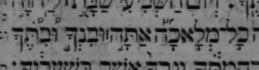
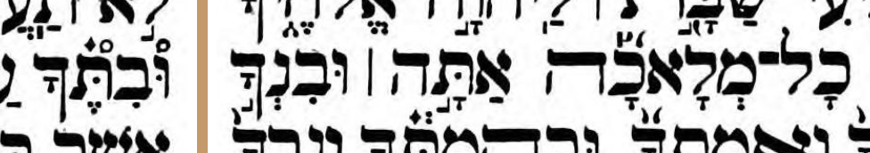
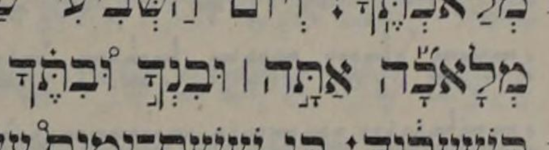
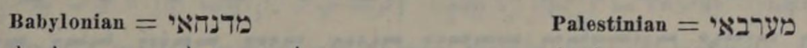
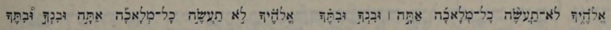
The following six books agree with (or are at least consistent with) Wikisource, which has the munaḥ in the תחתון and the maqaf in the עליון: Hahn, Leeser, MG Warsaw, Letteris, Minḥat Shai, and MG Venice. Of five of them we can say no more than "are at least consistent with", because they present tangled cantillation: both marks stand on one set of letters, which leaves open which mark belongs to which strand. Only Minḥat Shai has untangled strands, so it alone can be said to agree — and even there the maqaf is one we have to infer.
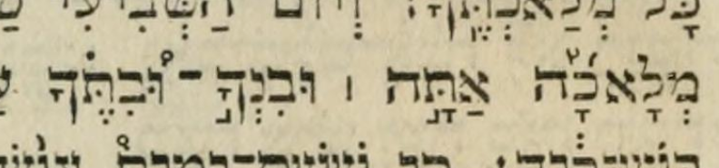
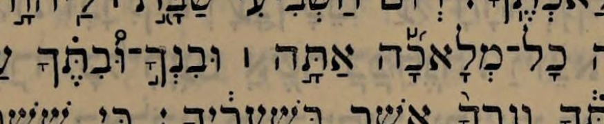
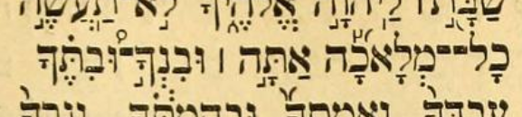
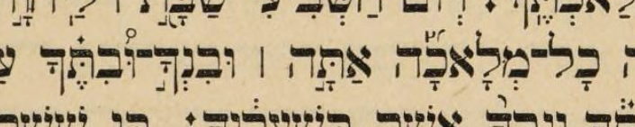
Minḥat Shai has no explicit maqaf, but we view it as having a maqaf implied by ובנך with only a meteg. It, like Ginsburg, sets the two strands out in columns, under other names than we use here, with that meteg on ובנך in the עליון against a munaḥ on ובנך in the תחתון. (Its אלה הטעמים לקורא בצבור is our עליון and its אלה הטעמי׳ לקורא ביחיד is our תחתון.)
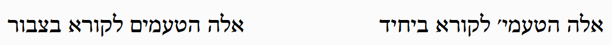
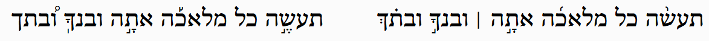
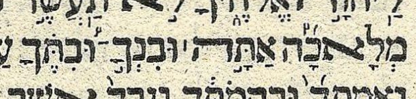